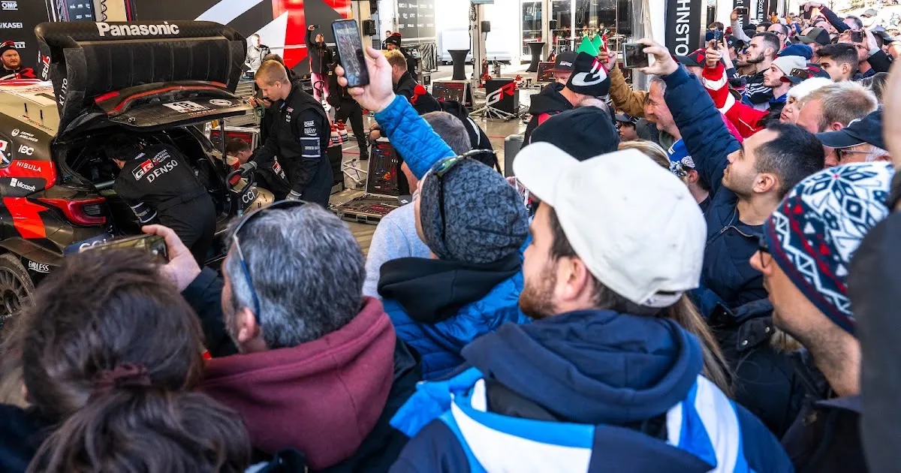
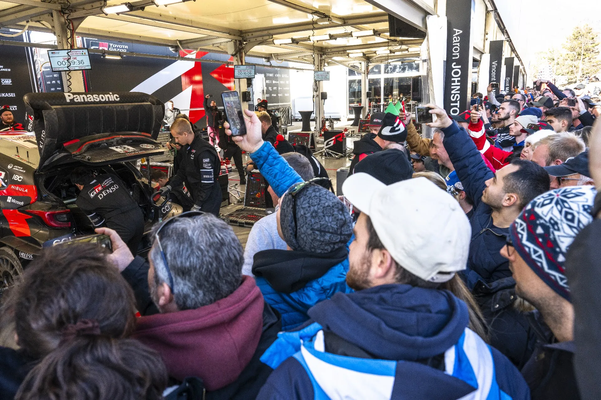
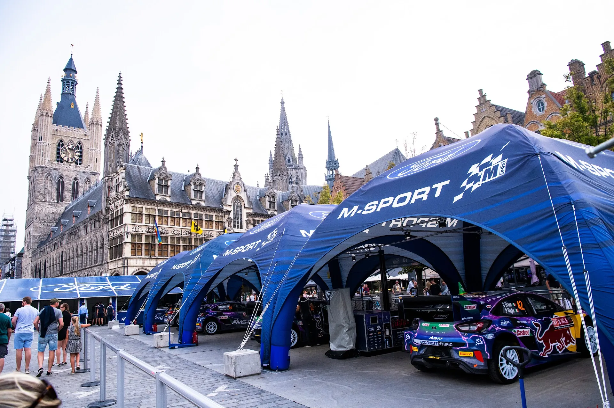
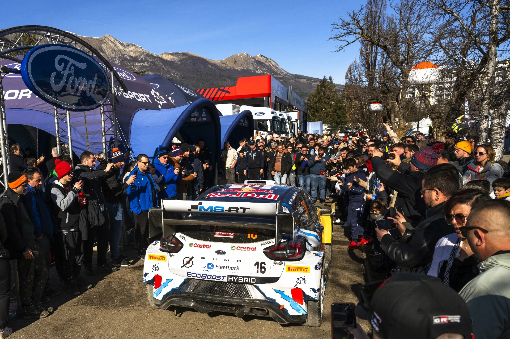

What's new for the WRC from 2025 and beyond
The World Motorsport Council has concluded, and some very important decisions have been taken for the future of the WRC and rallying as a whole.
Here's what was decided:
On the Promotion side:
In order to leverage promotional opportunities around each event and maximise the WRC’s full potential, the FIA will establish a WRC Promotion Team within the FIA in close collaboration with stakeholders from the WRC Promoter, event organisers and manufacturer teams.
The WRC Promotion Team’s key focus will be to develop a WRC Charter that will define a set of commitments from all stakeholders to promote the WRC to a wider audience against an agreed set of objectives and KPIs.
This coordinated approach will leverage the expertise of each party in order to promote the WRC outside its current fan base as one of the foremost motor sport championships in the world.

A new Promotion team will be introduced
On the Sporting Regulations:
Event organisers will be given more freedom when developing the route of their rally. However, while the starting day of an event and the number of stage kilometres can vary, all rallies should finish on a Sunday with the Power Stage.
The global calendar may include a small number of shorter sprint-style and longer endurance events in addition to the rallies that follow the existing format. Nevertheless, the overall timed kilometres covered during a season will remain largely unchanged with events still organised on a mix of asphalt, gravel and snow.
As part of cost-cutting measures, the target number of personnel of a three-car team will be capped in the future.
The service park set-up will follow a new model with manufacturers allocated locally sourced structures as a working space. As well as saving costs and reducing the amount of transportation required, the move provides more flexibility, should the service park location change during an event. It also reduces the total area required for the service park by event organisers.
To allow organisers to adopt less rigid formats, reduce liaison section distances and spread the reach of events, remote service opportunities will be encouraged with teams permitted to carry limited parts in a small support vehicle.

A mix of Sprint and Endurance events alongside the usual ones will compile the 2025 WRC calendar. Remote Services will be back also
And finally on the Technical side:
The current Rally1 car will continue as the WRC’s flagship vehicle in both 2025 and 2026 but with modifications to reduce cost and performance. These include the removal of the plug-in hybrid unit, with the performance compensated by a reduction in overall weight, and a reduction in the air restrictor and aerodynamics.
Rally2 cars will continue in their current form for the duration of their homologation as the basis for national and international series. However, Rally2 cars competing on WRC events from 2025 and beyond will have an option to run with a WRC kit consisting of a larger restrictor, a larger exhaust, an optional paddle shift gearbox and a rear wing with the objective of reducing the performance gap between Rally1 and Rally2 cars.
From 2026, revised Rally1 technical regulations for the WRC’s top-level category will be introduced based on the current Rally1 concept. These regulations will run alongside the current Rally1 regulations for the 2026 season. These new rules will use a common safety cell to reduce costs and complexity, and allow manufacturers and tuners to develop cars with their own bodywork based on production models including B-class, C-Class, compact SUV or a Concept Car designed to tight technical criteria such as centre of gravity and aerodynamics in order to equalize performance.
The power output will be targeted at 330hp, with the engine performance controlled by a reference torque curve for all cars. Engine and transmission will be cost-capped and technology limited to Rally2 equivalence. Aerodynamic efficiency will be limited along with a top speed restriction to reduce development and cost.
The cost per car will be capped at €400,000 and WRC manufacturers will be required to make their cars available for sale directly from the finish parc fermé of a WRC event.
At the earliest opportunity, an electric category will be introduced into the WRC with the FIA technical department charged with establishing suitable technical regulations that could utilise the new Rally1 safety cell and achieve parity of performance with Rally1 cars running on sustainable fuel.

The new Rally2+ and hybridless Rally1 system for 2025 and beyond sounds a lot like the LMH and LMDh system in the World Endurance Championship, and similar to the WRC cars that could be turned into RRC ones for regional competitions back in 2011.
Massive news then, what do you make of this, are you excited for this new era in the WRC? Let us know in the comments section!


Comments